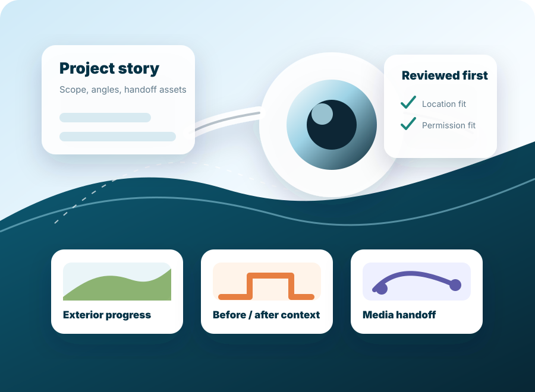

Contractors
Turn completed exterior, renovation, and property work into concise project visuals for sales and portfolio use.
Connecticut-first contractor project showcase
Higher Drones helps contractors, realtors, landlords, property owners, and local businesses package project visuals into a clear showcase for websites, proposals, social posts, listings, and sales conversations.

First local-service offer
The first offer is not a flight marketplace or booking platform. It is a manually scoped media package that clarifies the project story, capture needs, approved locations, usable angles, and final handoff assets before any work starts.
Who it is for
Turn completed exterior, renovation, and property work into concise project visuals for sales and portfolio use.
Prepare property media notes and showcase assets for listings, turnovers, and handoff conversations.
Document before/after context and completed improvements without overbuilding a production process.
Package location, exterior, and project visuals into useful content for local marketing channels.
What is included
Scope is confirmed manually. Any aerial capture language remains conditional and subject to review; the package can still be useful through ground, elevated, exterior, detail, and before/after storytelling assets.
How it works
Send the property type, town, project stage, desired use, timeline, existing assets, and permission constraints.
Higher Drones outlines the showcase angle, shot priorities, excluded work, and review-dependent capture needs.
Approved assets are organized into a practical project story with captions, handoff notes, and recommended use cases.
Permissioned examples, lessons, and missing proof assets are documented for the next local-service waypoint.
Trust and proof
This site avoids fake galleries, fake customer stories, unsupported performance claims, and sensitive location details. Future proof should come from approved project excerpts, permissioned visuals, clear usage notes, and completed local packages.
Service area
Requests are reviewed for location, project type, permissions, timeline, asset use, and practical fulfillment fit before a package is quoted or scheduled.